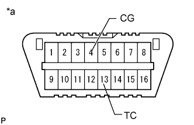

KINETIC DYNAMIC SUSPENSION SYSTEM > DTC CHECK / CLEAR |
| CHECK DTC (USING INTELLIGENT TESTER) |
Check DTC.
Connect the intelligent tester to the DLC3.
Turn the engine switch on (IG) and the intelligent tester on.
Enter the following menus: Chassis / KDSS / DTC.
Read DTCs by following the prompts on the intelligent tester screen.
Clear DTC.
Connect the intelligent tester to the DLC3.
Turn the engine switch on (IG) and the intelligent tester on.
Enter the following menus: Chassis / KDSS / DTC.
Clear the DTCs by following the prompts on the intelligent tester screen.
| CHECK DTC (USING SST CHECK WIRE) |
Check DTC.
|  |
Using SST, connect terminals 13 (TC) and 4 (CG) of the DLC3.
| *a | Front view of DLC3 |
Turn the engine switch on (IG).
Read the DTCs output from the KDSS indicator light in the combination meter.
Refer to the Diagnostic Trouble Code Chart (Click here) for DTC information.
After completing the check, remove SST check wire from the DLC3.
Clear DTC.
Make sure that the engine switch is off.
Using SST, connect terminals 13 (TC) and 4 (CG) of the DLC3.
| *a | Front view of DLC3 |
Turn the engine switch on (IG).
Clear the DTCs stored in the ECU by depressing the brake pedal 8 times or more within 5 seconds.
Check that the KDSS indicator light blinks at intervals of 0.25 seconds on and 0.25 seconds off.
Turn the engine switch off.
Remove SST from the terminals of the DLC3.